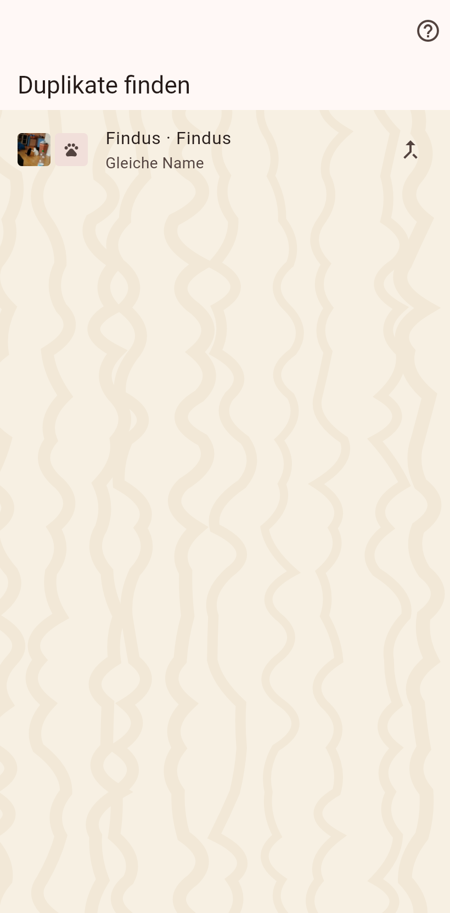

Katzen oder Zuhause, die zweimal dieselben zu sein scheinen: gleiche IDs oder sehr ähnliche Namen mit passenden Details. Ein Zusammenführen behält einen und faltet den anderen hinein.

Die Seite listet Paare, die sich ähneln. Ein Tipp auf ein Paar führt es zusammen, nachdem gefragt wurde, welches überlebt; ein langer Druck öffnet das erste zum Vergleichen.
Auf der Streunerliste: Katzen, die dasselbe Tier sein könnten wie eine vermisste Katze. Eine gleiche Chip-ID, ein Streuner, der im möglichen Streunergebiet einer vermissten Katze gesehen wurde, oder ein Aussehen, das in mindestens zwei Merkmalen übereinstimmt und sich in keinem widerspricht; die Chips zeigen welche. "Nicht dieselbe" blendet ein Paar auf diesem Telefon aus, bis sich das Aussehen eines der Tiere ändert.
Du wählst den Überlebenden. Seine aktuellen Werte gewinnen, die Historie des anderen Datensatzes kommt in die Zeitleiste des Überlebenden, der andere Datensatz hört auf zu existieren. Wo die Katze lebt, entscheidet der neueste Umzug eines der beiden, so behält der Streuner eines Aushangs seinen Weglauf-Tag, wenn er in die Katze im Katalog zusammengeführt wird. Zuerst wird ein Moment festgehalten; das Zusammenführen selbst lässt sich nicht rückgängig machen, deshalb fragt es.